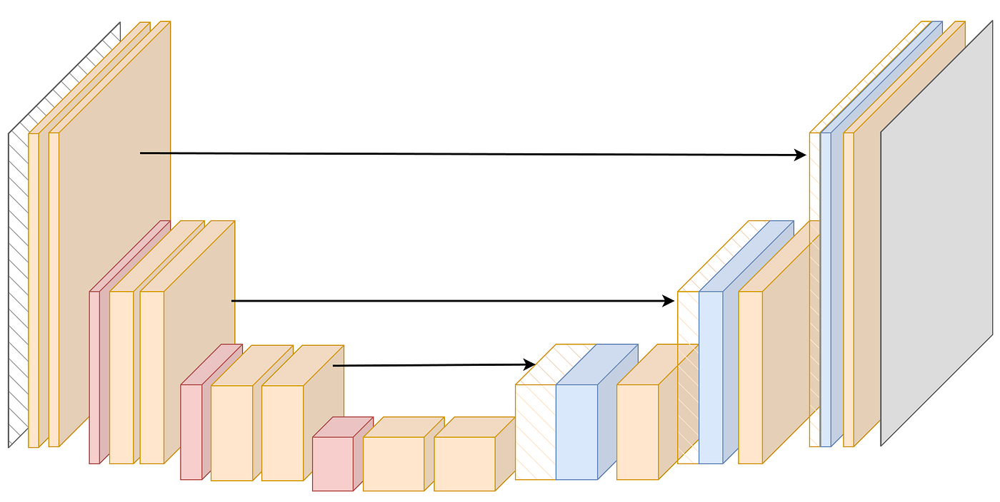
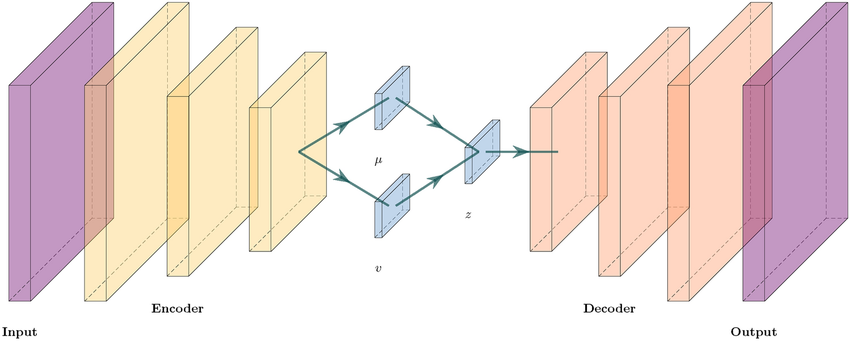

A lightweight approach to recreating high-resolution water and air flows from coarse measurements, without violating the laws of physics.
Whether it’s wind curling around an aircraft wing, weather patterns drifting across continents, or water swirling in a river, simulating fluids on a computer is computationally expensive. Running hyper-detailed simulations can require days of supercomputer time.
FlowGen is a lightweight deep learning project designed to solve that bottleneck. It takes low-resolution, blurry 2D fluid data (the kind you get from cheap sensors or coarse, quick simulations) and sharpens it back into sharp, physically accurate high-resolution flows. It also tells you how confident it is in its own reconstruction.
The AI upscalers that are trained to make photos look good to a human eye are not trained to obey the laws of physics. They can hallucinate details that look plausible, but are physically impossible.
An image upscaler only cares if a picture looks believable to a human eye. But fluids have unbreakable physical rules. For instance, water is incompressible: if 1 liter of water flows into a tiny region, 1 liter must flow out. Standard AI models often generate arrows that all point inward toward the same spot, accidentally inventing "water-destroying black holes" on the grid. (water goes in, but nothing comes out.)
When high-speed fluid flows, it creates vortices and eddies (whirlpools and swirls). When you downsample a fluid field, all those fine, detailed vortices get squashed into a single blur. The issue is that there are many different ways to arrange tiny whirlpools that all produce the same blurry patch. This is called an ill-posed inverse problem. One blurry fluid patch can match dozens of different, equally valid arrangements of tiny vortices.
If an AI is forced to output just one guess, it will compromise by averaging all the possibilities together. The result is a smoothed-out blur that destroys the turbulence. Hence, a model that can show us different plausible possibilities (realizations) is needed, so we can spot where the AI is certain and where it is guessing.
To tackle this, two models are implemented and compared: a reliable deterministic baseline (U-Net) and a probabilistic generative model (CVAE).
The Deterministic Benchmark
U-Net is the gold standard for spatial-to-spatial problems. Its superpower is skip connections: bridges that pass exact coordinate positions directly from early layers to the output. This ensures physical boundaries stay sharp. It gives one reliable, single prediction.
The Generative Explorer
Instead of giving just one answer, the CVAE takes the blurry input plus a random seed. Based on the seed, it generates multiple plausible high-resolution flow fields. Where they all agree, the model is confident; where they diverge, the model flags high uncertainty.


| Architecture | Speed | Uncertainty Estimation? | Physical Reliability | The Verdict |
|---|---|---|---|---|
| Diffusion | Very Slow (20-1000 steps) | Yes | High | Too slow. If an AI takes minutes to denoise a frame, it defeats the purpose of speeding up CFD. |
| GAN | Fast (1 step) | No (Mode Collapse) | Poor (Hallucinates) | GANs love to invent fake, unphysical whirlpools just to trick the discriminator. |
| CVAE (Chosen) | Instant (1 step) | Yes (Principled) | High | The sweet spot: Lightweight, instant single-step inference, with mathematically sound uncertainty. |
If you train an AI using only standard pixel-matching loss, it learns to be lazy: it predicts smooth, stagnant water because smooth water minimizes average pixel error. Instead, custom penalties that enforce fluid physics were built:
pdebench.py): Standard scientific benchmarks containing pre-computed Navier-Stokes fluid simulations stored in HDF5 format.
synthetic.py): Because real CFD simulations can take tens of gigabytes,
a standalone generator is written that synthesizes realistic 2D turbulent flows on the fly using Fourier streamfunctions.
degradation.py): To teach the AI how to restore blurry data, high-resolution frames are artificially
degraded (downsampling by 4 times, average pooling, or injecting sensor noise) to create before-and-after training pairs.
RMSE & MAE measure average numerical speed errors. PSNR & SSIM check visual fidelity and structural sharpness.
Divergence RMS tests if mass was conserved (the closer to zero, the better).
Enstrophy Relative Error confirms whether the total rotational energy across the entire fluid field was preserved.
Kinetic Energy Spectrum Error verifies that turbulent energy cascades naturally from big eddies down to tiny ripples.
PICP (Coverage): If the model claims "I am 95% confident the fluid velocity here is between 2.0 and 3.5 m/s",
does the true speed actually fall inside that range 95% of the time?
Error-Spread Correlation: When the model gives a wide spread (high uncertainty), is the error actually higher there?
A good model should only be uncertain where it is genuinely likely to make a mistake.
Building deep learning models for fluid dynamics sounds straightforward in theory, but in practice, standard computer vision assumptions break down quickly. Here are the main engineering roadblocks that came up during development:
In machine learning, we usually expect neat (Batch, Channels, Height, Width) image folders.
In scientific computing, simulation datasets come from different CFD solvers dumped into massive HDF5 binary files, some structured as 5D tensors (t, x, y, z, c), others as 4D or 3D slices with arbitrary axis ordering.
The Fix: An automated inspection pipeline in pdebench.py was built that auto-detects tensor dimensionality, dynamically maps and transposes spatial axes into standard PyTorch format on the fly, and applies channel-wise normalization without destroying the relative physical scale between u and v.
Full Navier-Stokes benchmark runs (like PDEBench) take up tens of gigabytes and require high-bandwidth connections, making fast local testing, continuous integration, and debugging hard on a local machine.
The Fix: synthetic.py, a lightweight procedural turbulence generator, synthesizes realistic
2D incompressible velocity fields on the fly using randomized Fourier streamfunctions. This allows writing unit tests, verifying custom loss gradients,
and debuging architectures locally in seconds before training on heavy datasets.
Standard vision models optimize one objective (like L_1 or Cross-Entropy). Here, the network has five distinct loss terms simultaneously:
The Problem: These loss terms constantly conflict with each other. For example, if you weight the divergence penalty too aggressively, the model quickly figures out a "cheat": predicting zero velocity everywhere. Water standing completely still has perfect zero divergence, but ruins the actual flow prediction.
The Fix: A composite ELBO with careful loss weighting multipliers and a dynamic warm-up schedule is used-prioritizing base pixel reconstruction early in training, and gradually phasing in the physical divergence and enstrophy penalties to guide vectors into physically valid states.
The Problem: In fluid mechanics, up to 95% of the total velocity magnitude often comes from large, smooth, bulk flow (e.g., an entire river moving eastward at 5.0 m/s). The chaotic, turbulent eddies we actually care about are tiny local fluctuations of only 0.1 m/s.
When a standard network trains, it allocates nearly all of its capacity to fitting the massive 5.0 m/s bulk stream, leaving the subtle turbulent eddies smoothed over.
The Fix: Residual Formulation. Instead of asking the neural network to synthesize the entire flow field from scratch, we first upsample the low-resolution input via bicubic interpolation (x_lr_up). Then the network is constrained to predict only the residual difference:
output = x_lr_up + model(x_lr)
This shifts the bulk flow baseline out of the equation, freeing 100% of the model's parameters to concentrate exclusively on resolving fine-grained turbulent eddies.
By combining the fast geometry-preserving power of a U-Net with the multi-sample uncertainty of a CVAE, and grounding both with strict physics-informed losses. FlowGen demonstrates that AI can upscale complex turbulent fluids accurately, instantly, and reliably, while openly showing its work when it isn’t sure.